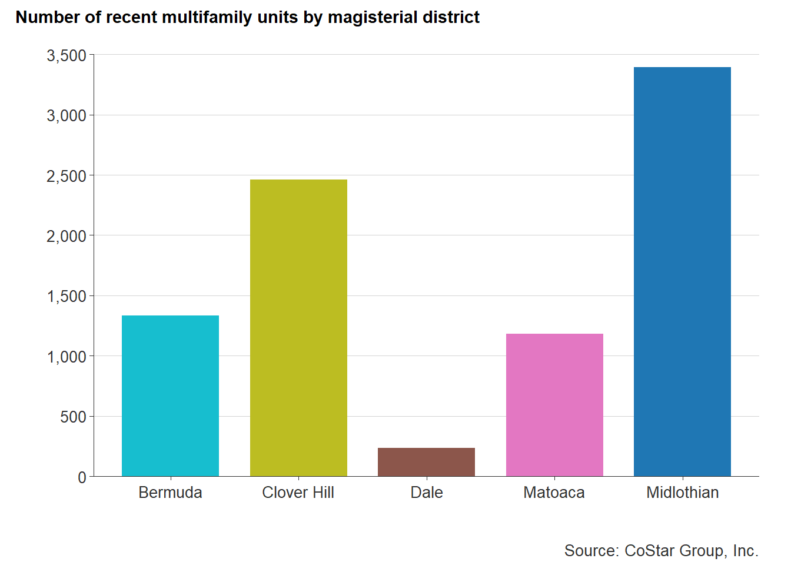
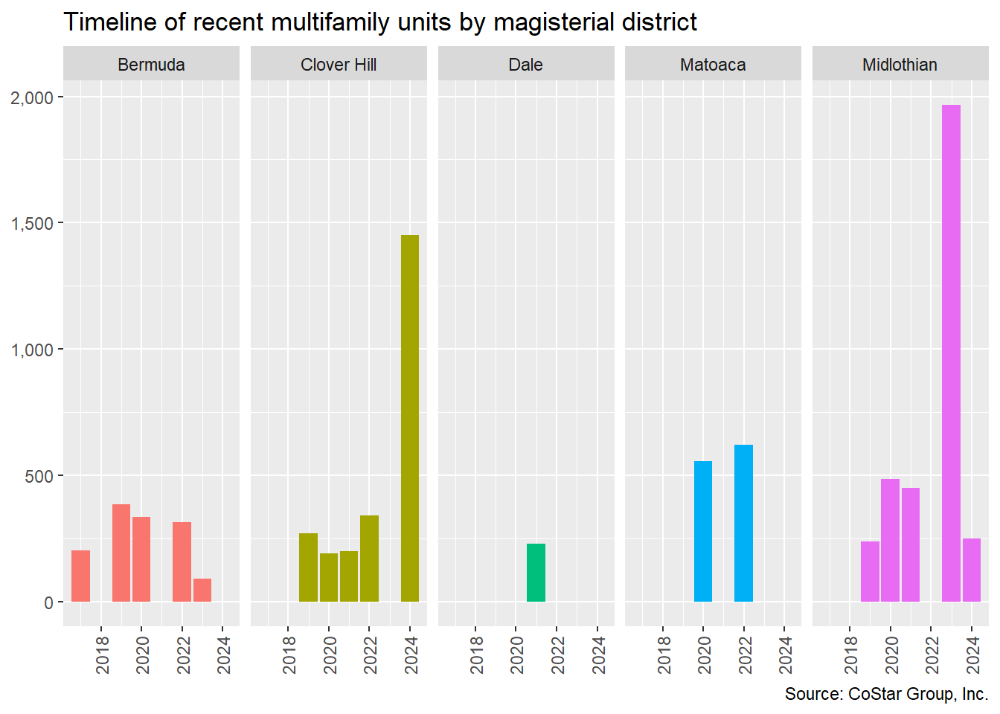
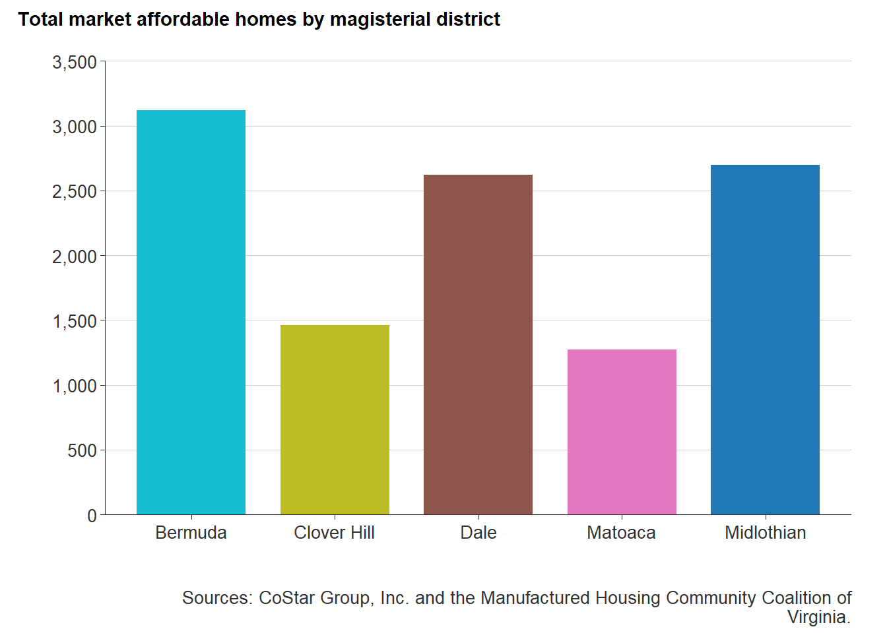
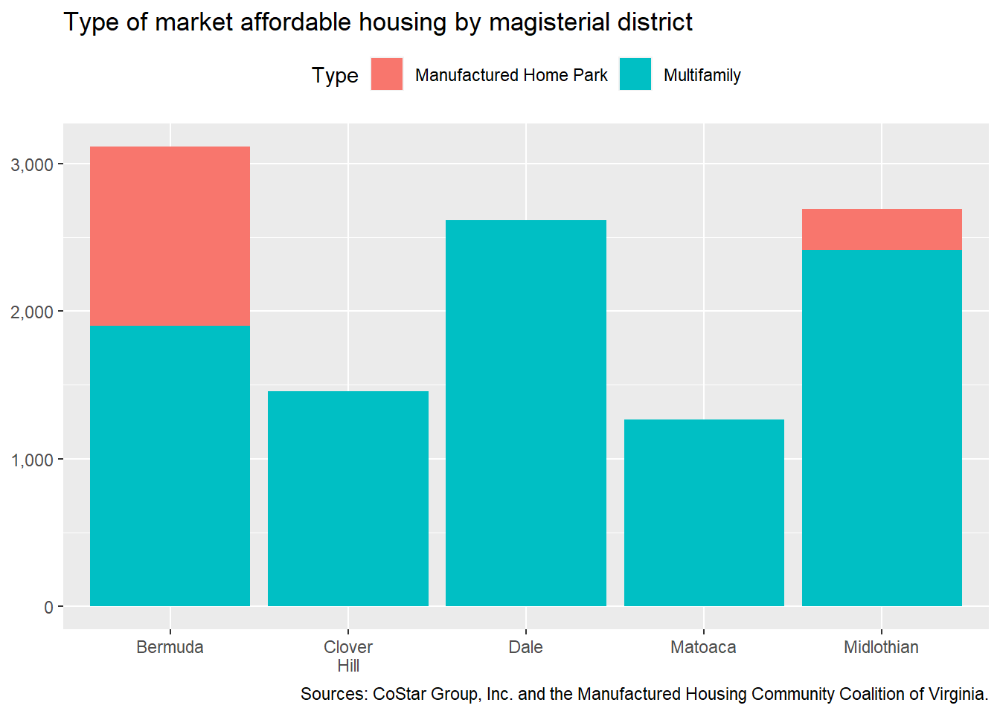
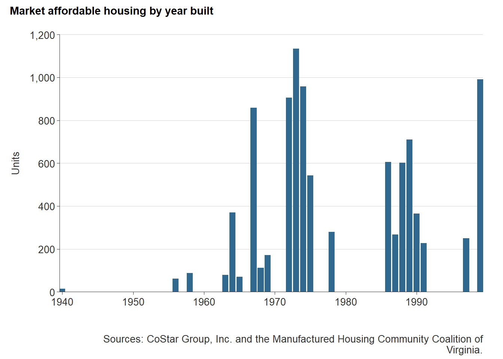
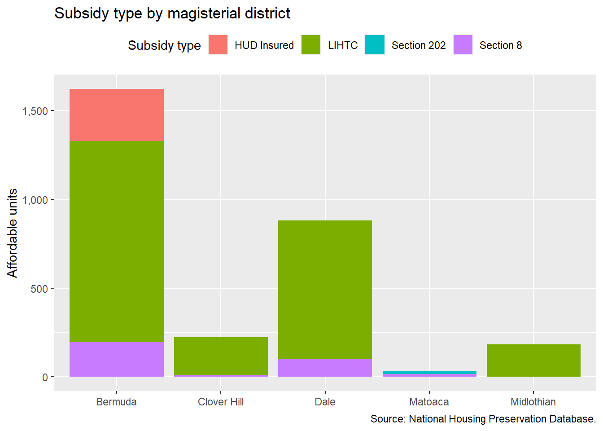
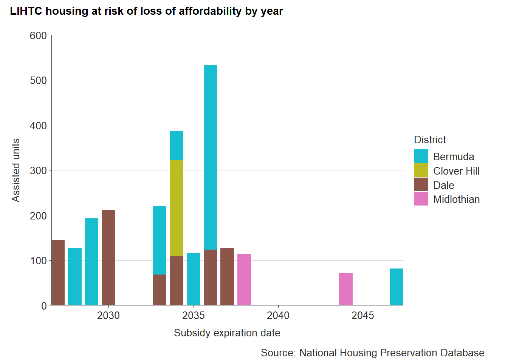
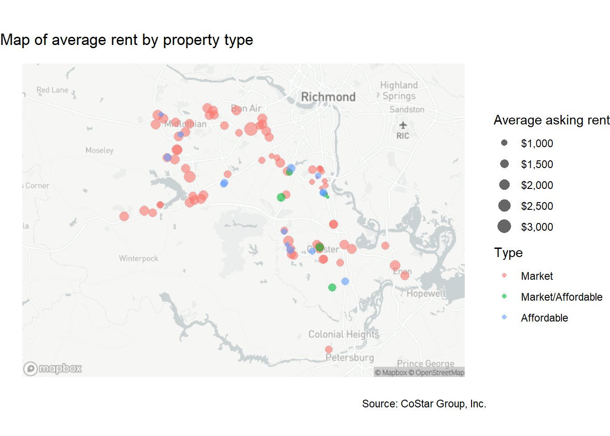
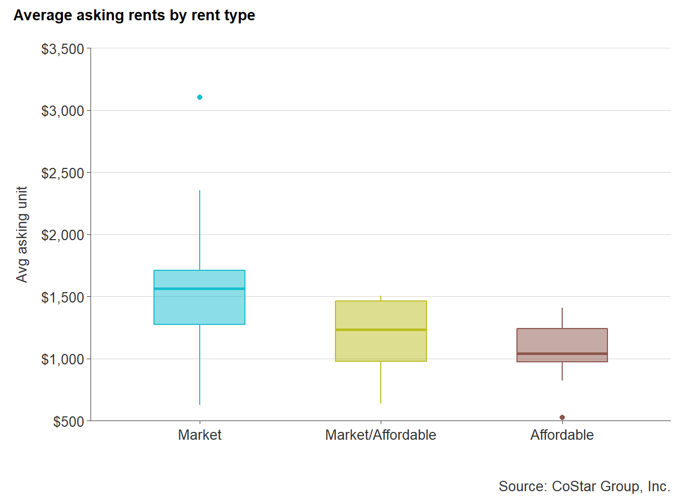
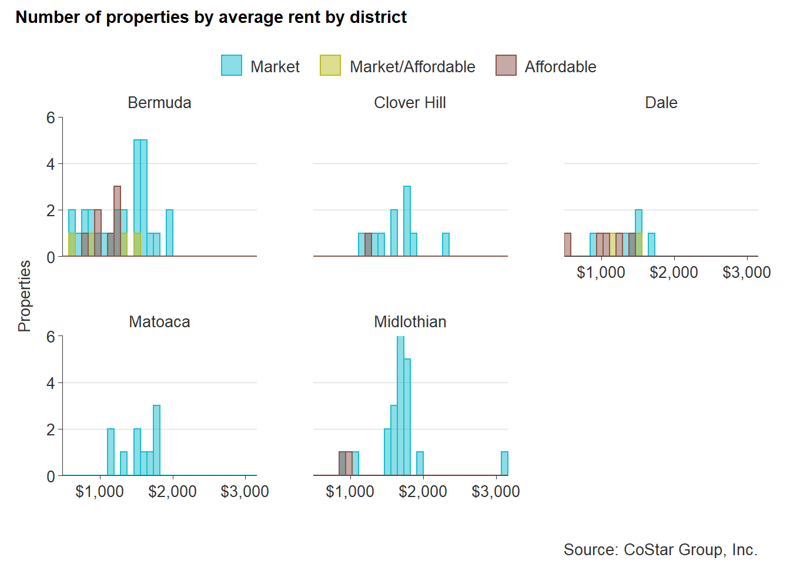

12 Rental spatial analyis
This section presents an analysis of the county’s existing rental supply, focusing on the amount and location of rental housing units by Chesterfield County magisterial districts.
12.1 Recent multifamily developments
The last five years have shown fluctuating multifamily development completions based on CoStar’s proprietary commercial real estate database. From zero completed units in 2018 to a five year high of 1,569 units in 2020, development has been sporadic but is expected to grow significantly in the coming years. Most recent developments have consisted of low-rise buildings, offering amenities such as clubhouses, pools, and fitness centers.
As of June 2022, there were 33 existing market-rate multifamily developments that were either built in the last five years, under construction, or proposed. An additional development is a mixed-income senior rental housing project by Better Housing Coalition that was completed recently. Development in the past five years has generally been spread across the county, but only one development was completed in the Dale District.
Thirty-two percent of recent and future development has been or will be constructed in the Midlothian District. In 2023 and 2024, 3,757 new rental homes are expected to be completed—slightly more than the number of homes completed between 2020 and 2022.

This shift in intense development can be attributed to increasing home demand in this affluent and amenity-rich portion of the county. Greenfield development in the western part of the county also contributes to its attractiveness to multifamily and mixed-use developers—providing less risk when compared to redevelopment of brownfield sites.
The Midlothian area also offers convenient access to Route 288, where residents can reach major job centers like the County Government Center, or even centers outside the county, like West Creek in Henrico County.

12.2 Market affordable rental
Market affordable rental housing is spread throughout each district of Chesterfield County. However, the majority of market affordable rentals lie along the city-county border. This is a typical trend in most metropolitan areas, wherein early suburban development in the mid- to late 20th century led to small garden apartment development on the outskirts of major cities. But these “inner-ring” suburbs are growing rapidly, especially with more and more diverse populations.1
The Bermuda District, which includes the entirety of the Route 1 corridor, contains the largest number of market affordable rental properties, specifically manufactured home communities (8 from the city border down to Route 10). The only other district with manufactured home communities present is the Midlothian District with an estimated 275 homes across two properties—the majority of which are located in Suburban Village.

Market affordable rentals are largely located in garden style apartments. Garden style apartments are communities made up of small buildings that are at least two stories high, but no higher than four stories. This style of apartment was hugely popular in the 1960s and remained so throughout the 1970s and 1980s.2

The largest of these communities is Crystal Lakes Apartments is located along Chippenham Parkway, with 716 apartment homes. Built in 1967, the property recently underwent renovations in 2020. Subsequently, the property saw a 6 percent increase in average market rent per unit from 2019 to 2020.
These older garden style communities may have some amenities like a clubhouse, playgrounds, or fitness centers, but they are often outdated. Twenty-six of the 61 market affordable properties were built in the 1960s and 1970s. Only eight of these properties have reported a renovation; most of these renovations having been completed in the last seven years.
Preserving market affordable rentals, especially near the city-county border and along transit lines, helps support low- to moderate-income renters. McKinsey & Company, a global management consulting firm, has even focused research on preserving such a valuable asset of local housing stock.3

12.3 Affordable rental
Rental housing supported by federal affordable housing programs is located in each Chesterfield County district. As of early 2022, the Bermuda District contains the most affordable housing units — with roughly 1,622 homes across 14 different buildings.
The Dale District compares the second most federally-supported rental housing with 881 homes — nearly half that of the Bermuda District. The location of subsidized housing in these areas is largely related to the provisions of federal programs like the Low-Income Housing Tax Credit program that favor development in Qualified Census Tracts (QCTs) and Difficult Development Areas (DDAs).
The bulk of affordable rental housing is supported by the Low-Income Housing Tax Credit program — 2,312 rental homes. Significant research has been doing on the placement of LIHTC developments and their impact on surrounding communities. A review of these studies found that “property value increased when LIHTC developments are built in low-income areas” and furthermore, decreases in crime are associated with LIHTC development.4 Even the location of LIHTC development in high opportunity areas has proven to have positive impacts.5

LIHTC in the County has largely been developed by for profit developers with only one non-profit developer in the county, Better Housing Coalition (BHC). BHC, one of the Richmond region’s largest nonprofit developers of affordable housing, has concentrated much of their work along Route One — where they first developed their first phase of Winchester Green townhomes in 1999.6 Since 1999, Better Housing Coalition has continued to phase development with Market Square and will continue develop on adjacent parcels with Winchester Forest.
Programs like LIHTC have a time frame for affordability restrictions. For LIHTC in Virginia, like many other states, there is a 30 year commitment to affordability, but only a 15 year compliance period, wherein property owners can increase rents. By 2040, the majority of existing LIHTC housing (1,984 homes) will be outside the 30 year commitment period. Nonprofit developers will often seek new allocation of tax credits before their commitment period ends, but there is often little incentive for for-profit developers to maintain affordability restrictions past the compliance period.

Source: National Housing Preservation Database
LIHTC developments in the Bermuda and Dale Districts are set to face the end of the affordability commitment period before 2040, but Bermuda District LIHTC properties are largely nonprofit owned and managed — therefore, less likely at risk of loss. But Dale District LIHTC properties could face significant risk of exiting from the affordable housing stock.
12.3.1 Price comparison
The following makes comparisons between affordable multifamily and market-rate multifamily rental prices across Chesterfield County. CoStar data is incomplete for some properties, but still provides an accurate and up-to-date average market asking rent per unit by property. The analysis below includes 96 multifamily properties where average asking rent data is available. It excludes manufactured home communities and single-family rentals.
The map below shows the location of market rate, affordable (rent restricted or rent subsidized), and market/affordable multifamily developments. The size of the circle represents the average asking market rent per unit for each property. The map shows a large amount of market rate properties located in the northern section of the county, specifically along Midlothian Turnpike and Route 288. Affordable rental properties, including those that are mixed-income, are largely located towards the eastern part of the county along Route 1 and Route 10.

Market rate rents skew towards the $1,500 to $2,000 range, with two properties well-above the $2,000 rent level. These two properties are high-end properties; one being a townhome development and the other a senior independent living with substantial amenities and programming. Affordable rental properties have rents that sit closer to $1,000, which would require at least $40,000 annually to not be cost-burdened. Market/affordable rents are scattered but are typically between $1,000 and $1,500.

The following chart shows the distribution of rental properties by their average rent for each magisterial district. The Bermuda district has the largest share of lower-cost apartments, supplied by both rent-restricted and market rate properties. The Dale district has the next highest number of low-cost apartments of all types. The Midlothian district has the highest average rents, with most properties ranging well above $1,500.

Hanlon, Bernadette. (2009). “A Typologoy of Inner-Ring Suburbs: Class, Race, and Ethnicity in U.S. Suburbia.” City and Community.2009;8(3):221-246. doi:10.1111/j.1540-6040.2009.01287.x↩︎
Johnson, Emily. (2022). https://rejournals.com/suburban-garden-style-apartments-are-2022s-comeback-kid/↩︎
Kling et al. https://www.mckinsey.com/industries/public-and-social-sector/our-insights/preserving-the-largest-and-most-at-risk-supply-of-affordable-housing↩︎
Keri-Nicole Dillman, Keren Mertens Horn & Ann Verrilli (2017) The What, Where, and When of Place-Based Housing Policy’s Neighborhood Effects, Housing Policy Debate, 27:2, 282-305, DOI: 10.1080/10511482.2016.1172103↩︎
Ibid↩︎
Phase 1 of Winchester Greens was financed by a $5.8 million bond issued by the Chesterfield County Industrial Development Authority, $13.8 million from HUD, and $800,000 in Community Development Block Grant from Chesterfield County.↩︎